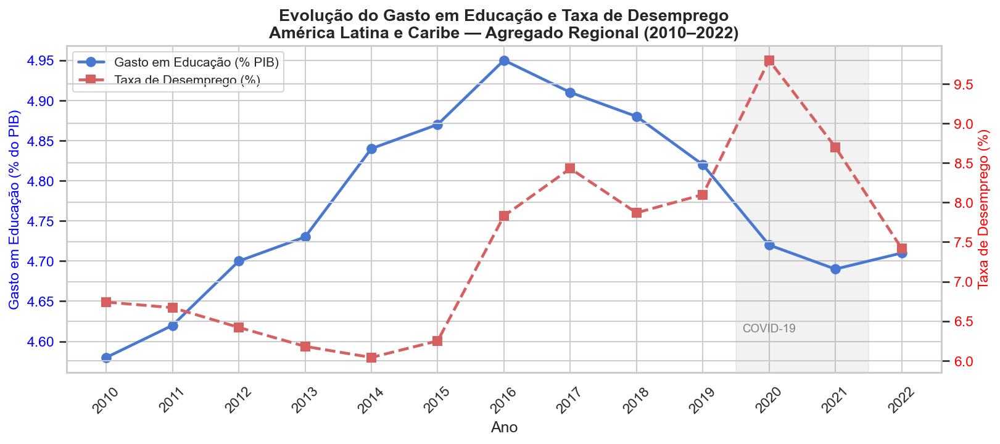
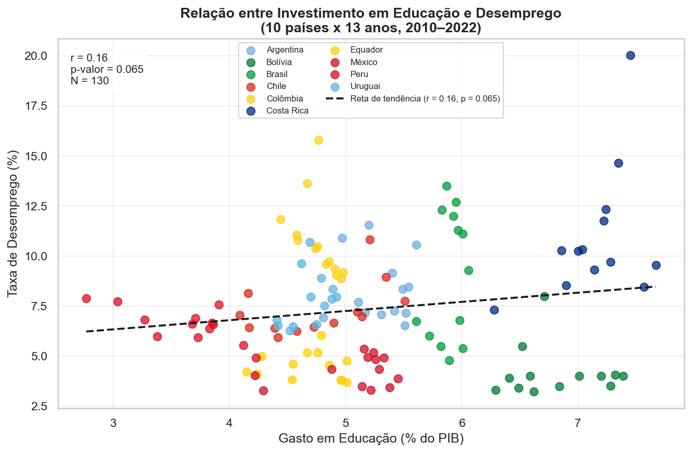
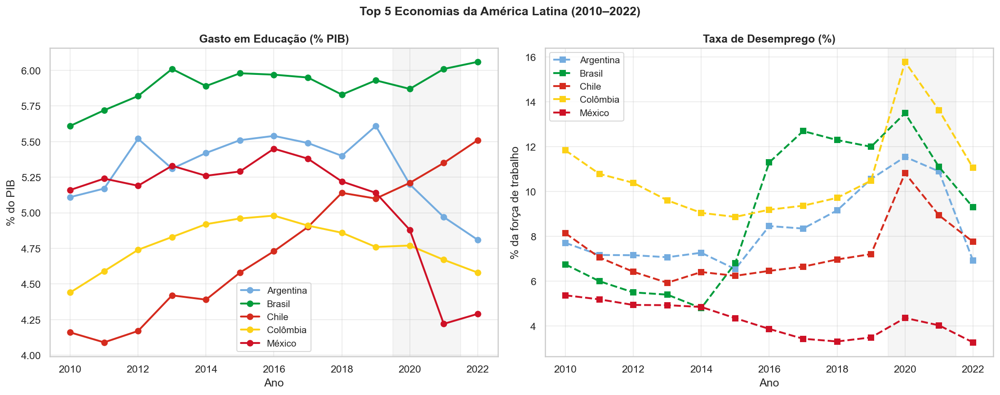
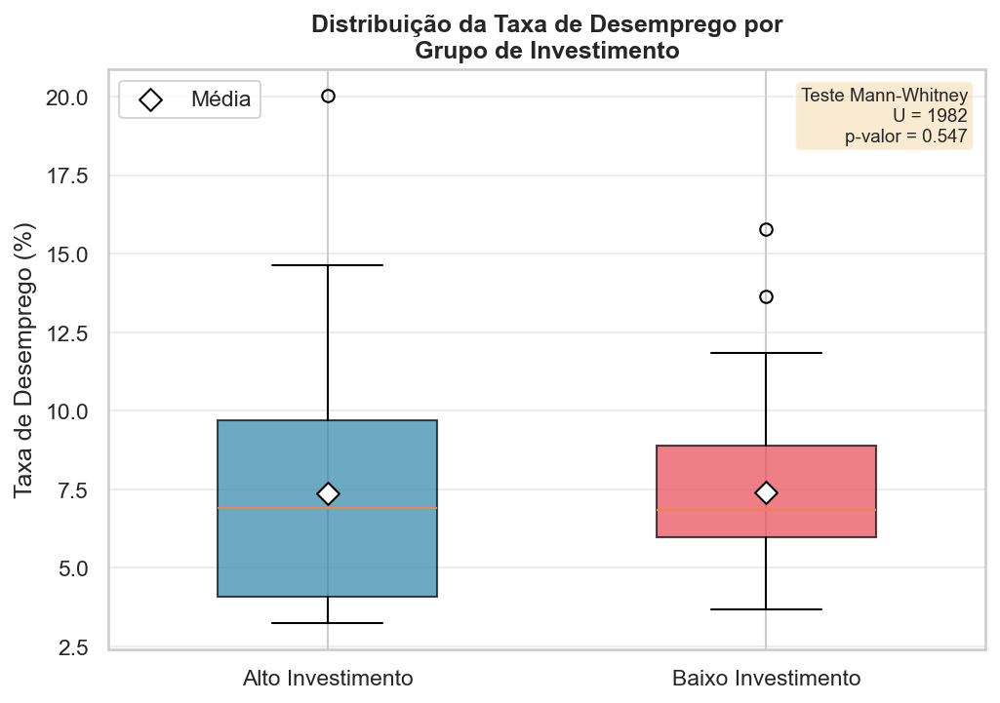
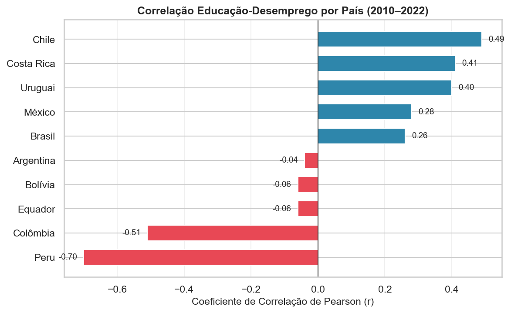

A compreensão da dinâmica entre investimento público em educação e desempenho do mercado de trabalho é um dos pilares centrais da macroeconomia do desenvolvimento. Sob a ótica da Teoria do Capital Humano (Becker, 1964; Mincer, 1974), gastos governamentais em educação não devem ser encarados meramente como despesas correntes, mas sim como investimentos estratégicos de longo prazo capazes de aumentar a produtividade marginal do trabalho, impulsionar a inovação e alinhar a oferta de habilidades às demandas de um ecossistema produtivo em constante modernização.
Na última década, a América Latina enfrentou severos desafios estruturais: armadilhas de baixa produtividade, transições demográficas aceleradas e choques macroeconômicos que reconfiguraram seus mercados ocupacionais. A pandemia de COVID-19 (2020–2021) agravou ainda mais esse quadro, elevando abruptamente as taxas de desemprego em toda a região. Nesse contexto, a pergunta de pesquisa deste trabalho é:
A relevância econômica da questão reside na capacidade de fornecer subsídios empíricos para o desenho de políticas públicas que transformem o orçamento educacional em um motor de geração de emprego qualificado e redução do skills mismatch — o descompasso entre as qualificações ofertadas pelos trabalhadores e as exigências do mercado.
A hipótese central fundamenta-se na premissa de que o investimento público em educação atua como catalisador para a elevação da produtividade e da qualificação da força de trabalho. Sob a ótica da teoria econômica, pressupõe-se que um incremento sustentado nos gastos em educação (% do PIB) resulte, no longo prazo, em redução do desemprego estrutural, ao mitigar o skills mismatch.
Para fins de investigação descritiva, a hipótese desdobra-se em três dinâmicas observáveis:
Os dados foram obtidos diretamente da API do Banco Mundial (World Bank Open Data) via biblioteca Python wbgapi. Foram coletados dois indicadores para um conjunto de 18 países da América Latina e Caribe no período de 2010 a 2022:
| Código | Indicador | Unidade | Fonte |
|---|---|---|---|
| SE.XPD.TOTL.GD.ZS | Gasto público em educação | % do PIB | World Bank / UNESCO |
| SL.UEM.TOTL.ZS | Taxa de desemprego total | % força de trabalho | World Bank / OIT |
Além dos dados por país, foi coletado o agregado regional LCN (Latin America & Caribbean) diretamente do Banco Mundial, permitindo análise da tendência conjunta da região. A amostra final, após limpeza, compreende 10 países com cobertura temporal mínima de 70% em ambos os indicadores: Argentina, Bolívia, Brasil, Chile, Colômbia, Costa Rica, Equador, México, Peru e Uruguai.
Para garantir reprodutibilidade exata, os dados brutos foram congelados como um snapshot em CSV no repositório do grupo (dados_brutos_paises.csv e dados_brutos_regional_LCN.csv), o que assegura a reconstrução integral da análise mesmo diante de revisões futuras das séries do Banco Mundial.
O pipeline de tratamento foi inteiramente implementado em Python e pode ser reproduzido a partir do código-fonte entregue. As etapas principais foram:
Nota de reprodutibilidade: os dados tratados não são entregues. A execução sequencial das células do notebook reconstrói integralmente a base a partir dos dados brutos do Banco Mundial versionados no repositório.
| Estatística | Gasto Educação (% PIB) | Taxa Desemprego (%) |
|---|---|---|
| N observações | 130 | 130 |
| Média | 5,28 | 7,38 |
| Desvio-padrão | 1,06 | 3,00 |
| Mínimo | 2,77 | 3,24 |
| 1º Quartil | 4,60 | 4,96 |
| Mediana | 5,06 | 6,86 |
| 3º Quartil | 5,92 | 9,27 |
| Máximo | 7,67 | 20,02 |
A Figura 1 apresenta a evolução do agregado regional. O gasto em educação cresceu consistentemente de 4,58% do PIB em 2010 para 4,95% em 2016, apresentando leve retração nos anos seguintes. O desemprego manteve-se relativamente estável até 2015 (6,0–6,7%), acelerou entre 2016 e 2019 — fortemente influenciado pela recessão brasileira — e atingiu o pico em 2020 (9,8%) com a pandemia de COVID-19, com recuperação gradual em 2021–2022.

O diagrama de dispersão (Figura 2) apresenta a relação entre as duas variáveis para o painel completo (10 países × 13 anos = 130 observações). A reta de tendência linear apresenta coeficiente de Pearson r = 0,16 (p = 0,065), indicando correlação positiva fraca e marginalmente não-significativa ao nível de 5%. Este resultado, aparentemente contrário à hipótese, reflete a dominância de choques macroeconômicos pontuais (principalmente COVID-19) que elevaram simultaneamente o desemprego em países com diferentes níveis de investimento educacional.

A Figura 3 compara a trajetória das cinco maiores economias da região. Observa-se que o Brasil apresentou o maior crescimento em gasto educacional (de 5,6% a ~6,0% do PIB), mas também o maior aumento de desemprego, dominado pela recessão de 2015–2016 (de 4,8% para ~12%). O México e o Peru, com trajetórias distintas, mostram que a relação é influenciada por múltiplos fatores estruturais.

Os países foram classificados em dois grupos com base na média histórica de gasto em educação, usando como limiar a mediana dessas médias (≈ 4,9% do PIB; a mediana do conjunto de observações é ≈ 5,06%): 'Alto Investimento' (Argentina, Bolívia, Brasil, Costa Rica e México) e 'Baixo Investimento' (Chile, Colômbia, Equador, Peru e Uruguai). A comparação das distribuições (Figura 4) mostra que os dois grupos apresentam taxas de desemprego praticamente idênticas: o grupo de 'Alto Investimento' registrou média de 7,4% (mediana 6,9%) e o de 'Baixo Investimento', média de 7,4% (mediana 6,8%). O teste de Mann-Whitney não detectou diferença estatisticamente significativa (U = 1.982, p = 0,547). A ausência de diferença entre os grupos é coerente com a fraca correlação agregada e reforça que o nível de gasto, isoladamente, não discrimina o desempenho do mercado de trabalho — resultado esperado dada a amostra limitada e a ausência de controles para variáveis de confusão.

A análise individualizada (Figura 5) revela heterogeneidade expressiva nas correlações. Peru (r = -0,70) e Colômbia (r = -0,51) apresentam correlações negativas fortes, consistentes com a hipótese de que maior investimento em educação está associado a menor desemprego. Argentina (r = -0,04), Equador (r = -0,06) e Bolívia (r = -0,06) exibem correlações neutras. Por outro lado, Brasil (r = 0,26), México (r = 0,28), Uruguai (r = 0,40), Costa Rica (r = 0,41) e Chile (r = 0,49) mostram correlações positivas — provavelmente reflexo de que, nesses países, tanto o gasto em educação quanto o desemprego responderam positivamente a crises macroeconômicas (aumentos de gastos contracíclicos durante períodos de alto desemprego).

BECKER, G. S. Human Capital: A Theoretical and Empirical Analysis, with Special Reference to Education. New York: Columbia University Press, 1964.
MINCER, J. Schooling, Experience, and Earnings. New York: NBER, 1974.
WORLD BANK. World Development Indicators. Disponível em: https://databank.worldbank.org. Acesso em: jun. 2026.
CEPAL. Panorama Social de América Latina 2023. Santiago: CEPAL, 2023.
OIT. Perspectivas Sociales y del Empleo en el Mundo 2024. Ginebra: OIT, 2024.